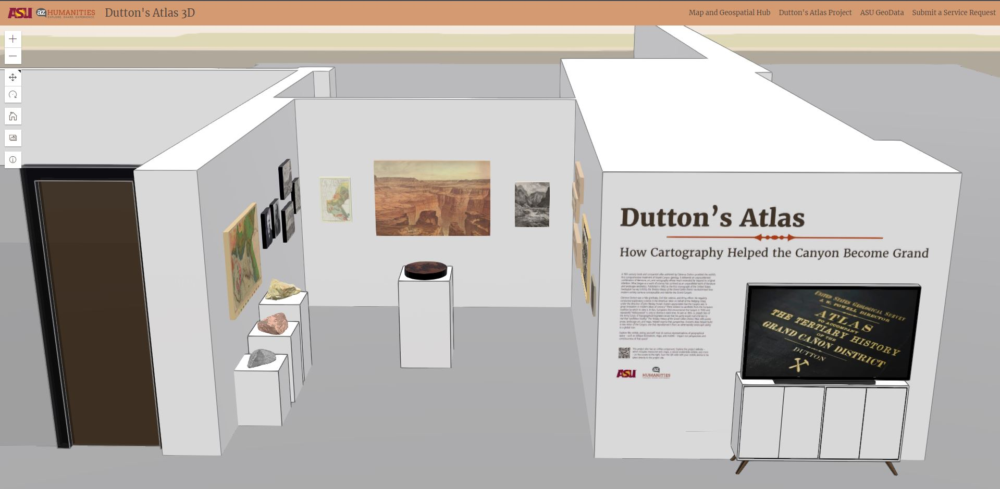
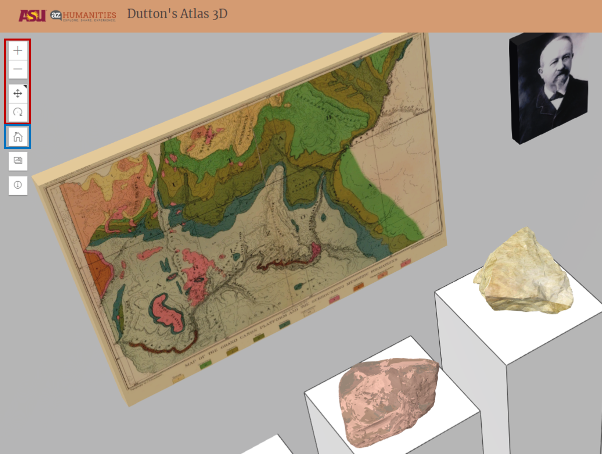
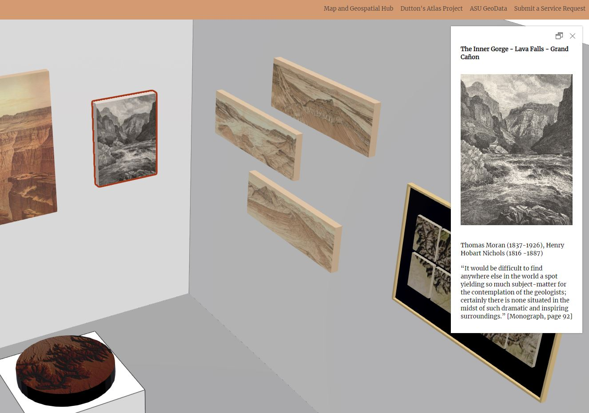

About the 3D Exhibit
Welcome to the Dutton's Atlas 3D Exhibit! This digital exhibit, and its real-world counterpart, is part of a larger project called Dutton's Atlas: How Cartography Helped the Canyon Become Grand.
This interactive map scene is a digital replica of a real-world exhibit located in Arizona State Universitys Hayden Library, in Tempe, Arizona, USA.
The physical exhibit is temporary and runs between October 2022 and December 2022.
We created this web-based model to make the exhibit accessible from anywhere in the world and to allow it to exist in perpetuity virtually.
Navigate the Scene
Use the navigation controls to move through and reposition the 3D map scene (highlighted in red)
- Zoom-in
- Zoom-out
- Pan
- Rotate
- Orient north
Use the “home” button to return to the default scene view (highlighted in blue).
Explore the Exhibit
Exploring the exhibit is easy. Select any piece of art to learn more about it.
The pop-up box for maps and landscape illustrations will also contain links to explore those items in interactive web maps.
View the Exhibit Space
Select the button with the image icon to view a 360 degree panorama photo of the space.

Virtually tour within the panorama viewer (highlighted in red) and discover “hotspots” that reveal interesting facts about the space.
Access this Information Again
Select the “i” (information) button to reactivate this information box.
Learn More
Contact the Map and Geospatial Hub at ASU Library with any questions or comments about this project: geospatial.asu.edu.
Visit the Map and Geospatial Hub's GitHub Page to learn more about this project, including its source code and production credits.